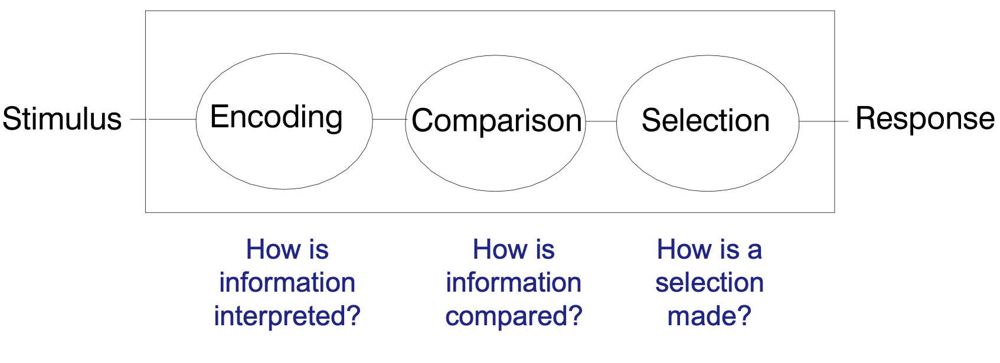

Tuần 0:
- Vai trò và tầm quan trọng của tiếng anh
- Khó khăn khi học tiếng anh đối với người Việt
- Vì sao học một ngôn ngữ mới lại khó vậy?
- Lý thuyết về nhận thức
- Học sao cho hiệu quả
- Các quá trình cần trải qua để thành thạo tiếng anh
Vai trò và tầm quan trọng của tiếng anh
Nếu trước đây tiếng anh được xem là kỹ năng mềm quan trọng và là điểm cộng cho một ứng viên vừa tốt nghiệp hay khả năng thăng tiến trong sự nghiệp thì trong vòng 5 đến 10 năm tới tiếng anh là kỹ năng bắt buộc phải có không chỉ trong công việc mà còn là đời sống hàng ngày.
Toàn cầu hóa thúc đẩy sự kết nối giữa các quốc gia, ngành nghề và các lĩnh vực với nhau đòi hỏi thế giới cần có một ngôn ngữ chung để giao tiếp và sự phổ cập tiếng anh cho mọi người đặc biệt là thế hệ trẻ tại Việt Nam là điều không thể tránh khỏi.
Những con số biết nói:
- là ngôn ngữ quốc tế phổ biến nhất
- 67 quốc gia sử dụng làm ngôn ngữ chính thức, 70 quốc gia sử dụng làm ngôn ngữ thứ hai
- ngôn ngữ chính thức được sử dụng trong các tổ chức chính trị, kinh tế, văn hoá, giáo dục như Liên Hợp Quốc, UNESCO
- được sử dụng nhiều nhất trong các bài báo về khoa học, công nghệ.
Tại Việt Nam:
- năm 2018 - 2019 tăng hơn 1000 trung tâm tiếng anh trên cả nước
- Xu hướng tích hợp dạy các môn chuyên ngành bằng tiếng anh tại các trường từ tiểu học đến đại học
- nhu cầu về số lượng các bài khoa học đăng trên các tạp chí quốc tế tăng cao
- Tiếng anh được xã hội và từng gia đình ưu ái đầu tư với kinh phí lớn hơn so với các môn học khác
- Tuy nhiên, là môn duy nhất có điểm trung bình dưới 5 (Tuoitre, 2020)
- phổ điểm chênh lệch rõ rệt giữa học sinh thành thị và nông thôn trong kỳ thi TN THPT 2021
Vấn đề của người Việt khi học tiếng anh
- giỏi ngữ pháp nhưng kém giao tiếp
- dễ bị mất động lực tiếp tục học tập
- sợ bị mắc sai lầm
- tinh thần tự học thấp dẫn đến bị động trong việc học
Nguyên nhân:
- số lượng giáo viên đạt chuẩn thấp (2-3%)
- Phương pháp dạy học lạc hậu: lấy thi cử là mục tiêu không chú trọng vào khả năng giao tiếp dẫn đến giáo viên chủ yếu tập trung vào ngữ pháp và từ vựng, không chú trọng phát âm.
- người học không được định hình từ trước: lý do tại sao phải học tiếng anh
- Cách phân chia khối A, B, C, D vào các trường đại học khiến tiếng anh vốn khó lại càng khó hơn.
- Sự khác biệt lớn giữa tiếng anh và tiếng việt khi phát âm: Việt Nam có nhiều ngữ điệu và nhịp điệu, người Việt thường áp dụng các nói tiếng Việt khi nói tiếng anh dẫn đến bỏ sót âm cuối, thiếu âm gió, ...
Điểm cộng:
- Người Việt chăm chỉ và kiên trì
Khó khăn khi học một ngôn ngữ mới
- Sự cản trở của não bộ trong quá trình học tập: người lớn có xu hướng phân tích quá mức trong cấu tạo của câu đã cản trở khả năng tiếp thu của não bộ. Ngược lại, trẻ em dễ dàng học một ngôn ngữ mới một cách tự nhiên khi chúng bắt chước người bản địa nói chuyện.
- Bộ não người trưởng thành thường sử dụng lại cấu trúc ngữ pháp và cách diễn giải của ngôn ngữ mẹ đẻ để hiểu một ngôn ngữ mới.
Bộ não chúng ta xử lý thông tin như thế nào?

Các mẹo để học hiệu quả hơn!
Việc học hiệu quả không chỉ nói đến việc bao nhiêu kiến thức chúng ta có được trong một thời gian mà ngay trong việc bảo đảm sức khỏe trong quá trình học tập. Dưới đây là một số mẹo giúp bạn học tiếng anh tốt hơn:
- Chậm nhưng chắc. Càng hiểu sâu về một vấn đề bao nhiêu thì càng ít kiến thức bạn cần phải ghi nhớ. Tuy nhiên điều này đúng với việc học ngữ pháp và viết. Đối với học speaking thì ngược lại, bạn càng ép não bộ ghi nhớ và phân tích câu cú sẽ khiến việc học không hiệu quả. Thay vì thế bắt chước người bản xứ và chăm chỉ luyện tập lại là điều quan trọng nhất.
- Đừng chỉ đọc. Hãy dừng lại và suy nghĩ. Khi bạn càng ép bộ não bạn suy nghĩ thì khả năng càng cao bộ não của bạn sẽ tự động lưu trữ thông tin.
- Hãy tự tạo riêng notes cho bạn thân mình. Có vô vàn nghiên cứu chỉ ra rằng các hoạt động ghi chú sẽ gia tăng khả năng tiếp thu kiến thức.
- Không có câu hỏi nào là ngu ngốc. Nếu bạn thắc mắc, phân vân hãy học cách đặt câu hỏi. Google là người bạn tuyệt vời để bạn tìm câu trả lời. Hầu hết những câu hỏi của chúng ta đều được giải đáp trên đấy. Nhưng hãy tìm kiếm nhiều hơn một câu trả lời trên nền tảng web và tự rút ra kết luận cho mình.
- Hãy hình thành thói quen đọc lại những gì bạn đã học trong ngày trước khi đi ngủ. Một phần của quá trình học tập, đặc biệt là quá trình kiến thức được lưu trữ lâu dài trong trí nhớ diễn ra sau khi bạn tạm dừng việc học. Bộ não của bạn cần thời gian để xử lý các thông tin trong bài học. Nếu bạn tiếp tục yêu cầu bộ não tiếp thu một thông tin mới thì một phần những gì bạn học trước đó sẽ biến mất.
- Hãy uống thật nhiều nước. Việc thiếu nước sẽ làm giảm chức năng nhận thức của bộ não.
- Hãy nói ra những gì bạn đã được học. Các hoạt động phát ra tiếng cũng là một phần của bộ não. Nếu bạn cố gắng hiểu một cái gì đó, hoặc gia tăng khả năng ghi nhớ thì hãy nói về nó. Tốt nhất là, hãy thử giải thích nội dung đó cho một người khác. Bạn sẽ học nhanh hơn và có thể tìm ra những khía cạnh mà bạn chưa từng nghĩ tới.
- Lắng nghe bộ não của bạn. Hãy chú ý khi nào bộ não của bạn trở nên quá tải. Nếu bạn thấy mình có những dấu hiệu như lướt qua nội dung bài đọc, hoặc quên đi những gì bạn vừa đọc thì đã đến lúc cho não bộ của mình nghỉ ngơi một chút. Một khi bạn bỏ qua một nội dung nào đó, khả năng là bạn sẽ không thể học nhanh hơn được và có thể bạn sẽ làm hỏng cả quá trình trước đó.
- Muốn học tiếng anh tốt thì hãy thực hành thật nhiều về nó. Hãy sử dụng chức năng thu âm giọng nói mỗi khi tra từ điển thay vì gõ bàn phím, sử dụng phương pháp shadowing để bắt chước ngữ điệu của người bản xứ, có vô vàn video phù hợp với sở thích cá nhân của bạn bằng tiếng anh để bạn nghe giúp bạn có đôi tai thính hơn với tiếng anh. Xây dựng riêng cho bạn một môi trường xung quanh bằng tiếng anh là điều tiên quyết để thành công.
- Đừng ngồi quá lâu. Hãy học ngay cả khi di chuyển. Việc thay đổi môi trường xung quanh bằng việc đi dạo bộ cũng sẽ giúp bạn có ý tưởng mới cho việc học và cũng giúp bạn khỏe mạnh hơn.